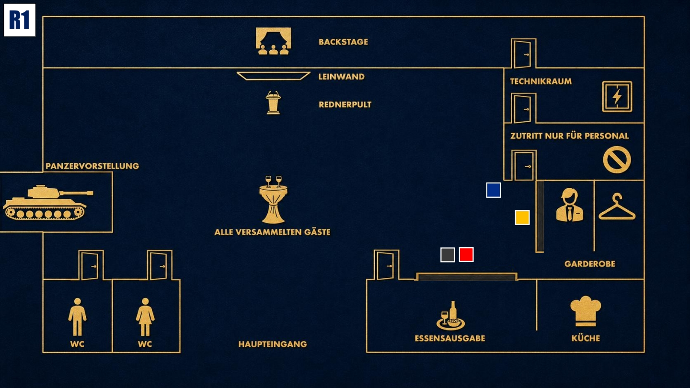

Beobachten & Testen
Lerne die anderen kennen. Finde heraus, wer etwas verbirgt, ohne selbst zu viel preiszugeben.

Das Ziel der ersten Runde
Finde heraus, ob jemand weiß, was Cole dir über Jake mitteilen wollte. Beobachte die Reaktionen der anderen Gäste und prüfe, ob hinter Jakes Job bei Stahlmann & Faust mehr steckt als Zufall.
Deine Geheimnisse
1. Der anonyme Zettel: Am Vortag hast du eine Nachricht in deiner Tasche gefunden: „Wenn du am Tag des Events genau hinsiehst, wirst du verstehen, wen du wirklich geheiratet hast.“ Du hast diese Nachricht Jake verschwiegen.
2. Der letzte Kontakt mit Cole: Cole wollte dir kurz vor seinem Tod etwas sagen. Er wirkte panisch und meinte, es gehe um Jakes Sicherheit bei Stahlmann & Faust.
Deine Mission
1. Beobachte Jake genau. Achte darauf, wie er auf Fragen, Vorwürfe und den Namen Cole reagiert. Wirkt er nur überfordert oder versucht jemand, ihn gezielt aus der Fassung zu bringen?
2. Prüfe Enisa indirekt: Du hast den Eindruck, dass Enisa Jake stark zu diesem Job bei Stahlmann & Faust ermutigt hat. Finde heraus, ob das therapeutische Unterstützung war oder ob sie ihn bewusst in diese Richtung gelenkt hat.
Deine Erinnerung an 18:00 Uhr

Zum Vergrößern tippen
Du holst dir gemeinsam mit Jake etwas zu essen. Von der Essensausgabe aus siehst du Michael an der Garderobe und Diego nahe dem Raum „Nur für Mitarbeiter“.
Mögliche Fragen
An Luisa: „Du arbeitest eng mit Jake zusammen und hast ihn eingestellt. Was war der Grund für die schnelle Einstellung meines Mannes?“
An Enisa: „Du kennst Jake gut. Hattest du den Eindruck, dass Stahlmann & Faust wirklich der richtige Ort für ihn ist?“